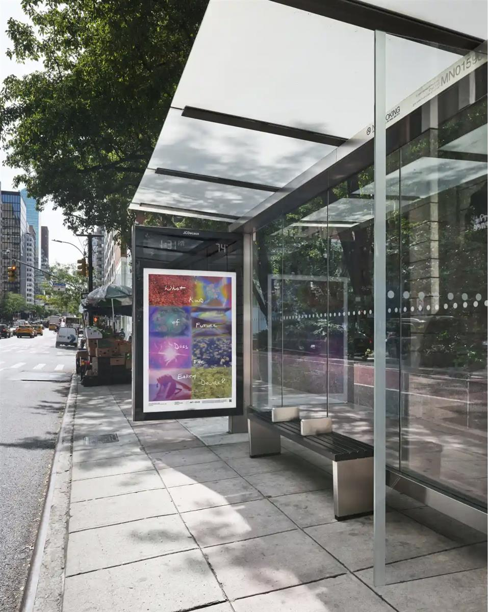
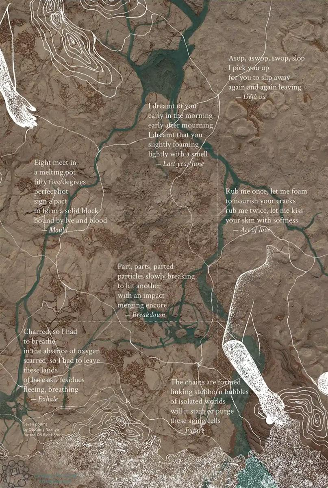
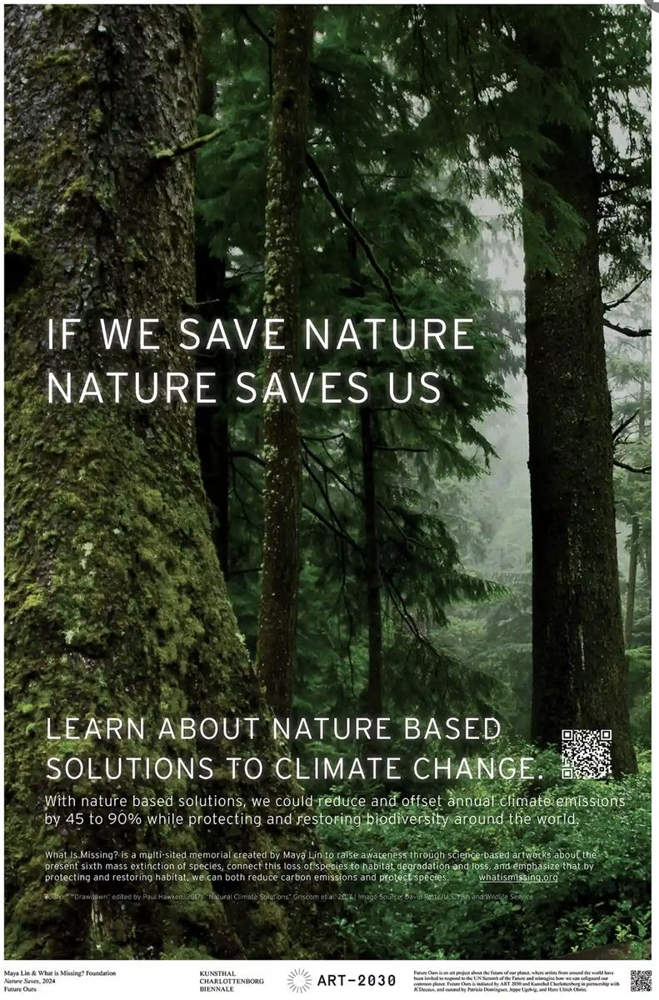

Art can help bridge that understanding of how we are connected to the planetary system’ … an installation image of Future Ours. Photograph: Art 2030
ON SOURCE: THE GUARDIAN
Veronica Esposito Thu 19 Sep 2024 10.02 CEST
‘Art changes people and people change the world’: the artists targeting UN’s general assembly
Posters by global artists have been placed around New York City to coincide with the annual meeting, hoping to drive home the importance of certain issues
This year, global artists have decided to shake up the scripted, polished performances of high politics at the UN general assembly. As delegates make their way toward UN headquarters in midtown Manhattan to debate goals for a sustainable future, they will be greeted by posters encouraging them to do things like commit crimes against reality, stop to ponder that we are all solar powered, consider African food emancipation and think about urban planning from the perspective of a child.
These posters are part of a carefully planned artistic intervention into what is widely considered one of the most pivotal meetings of the UN general assembly in years. The 79th general assembly, which opened on 10 September, will attempt to accelerate progress toward 17 major sustainability goals, covering such issues as climate change, women’s equality, ending global hunger and developing sustainable consumption models. Artists hope to have their own say into these goals and how they are achieved.
Titled Future Ours, this intriguing public art exhibition will proliferate artists’ posters throughout hundreds of bus shelters covering all five boroughs of New York City, as well as inside the UN itself. Attempting to offer a truly global, intergenerational perspective, Future Ours will include work from nearly two dozen artists and arts collectives from nations such as Thailand, the Democratic Republic of the Congo, Syria, Nigeria, Serbia and Brazil.
Future Ours is a project of the non-profit organization Art2030, whose mission is to unite art with the United Nations 2030 agenda for sustainable development.

According to Art2030’s founding director, Luise Faurschou, art is an essential ingredient to tackling the world’s major political problems. She sees artists as offering uniquely important insights toward what a sustainable future looks like. She also believes that art can move individuals to re-examine their values, spurring them to act in ways that will improve the outlook for the global future. “We trust that art changes people, and people change the world, and we need that,” she said via video interview.
Notably, Future Ours aspires to move away from perspectives centered on more developed “northern” nations, instead championing the voices of perspectives more representative of the entire globe. These include New Red Order, which works worldwide with networks to build Indigenous futures, The Institute of Queer Ecology, which resists the destruction caused by human-centric hierarchies, and the Congolese Plantation Workers Art League, which redistributes income from its activities to buying back land, where it practices alternatives to the extractive mono-cultural uses.
Nigerian-born, Antwerp-based artist Otobong Nkanga is representative of the global energy that Future Ours hopes to bring to the sustainability debate. Known for work that examines the intersection of neocolonialism and environmental degradation, she explores how practices like extractive mining or the creation and dyeing of tapestries leave their marks and memories in human bodies. “Otobong’s work is about being in communion with the environment, as opposed to a dominating colonialist separation from the environment,” said Hans Ulrich Obrist, a curator with Future Ours.

Maya Lin & What is Missing? Foundation – Nature Saves, 2024 Photograph: Art 2030
Nkanga’s contribution to the exhibition, entitled Flow, combines a topographic map superimposed over an image of parched, cracked earth, with short, enigmatic pieces of verse. One imagines the transportive, mysterious piece as juxtaposing quite strongly with the daily commute of those navigating the hyper-urbanized New York cityscape.
On the older end of the age spectrum is artist Maya Lin, famed for designing the Vietnam Veterans Memorial, as well as major architecture projects around the world. According to Obrist, Lin’s chosen artistic medium of architecture is one that perfectly embodies the integration of creativity with the practical need for creating climate solutions.
Lin’s offering to Future Ours provides a gorgeous photograph of a lush forest with clean, all-caps text that exhorts viewers to “learn about nature based solutions to climate change”. A QR code on Lin’s piece takes audiences to her website What Is Missing, where they can learn about the ways that nature can be used to help resolve the climate crisis. “Art can make the invisible visible, and one thing Lin is doing is hoping to make visible the mass extinction of so many species,” said Obrist. “You can see this through the remarkable data visualizations on her website.”

Maya Lin & What is Missing? Foundation – Nature Saves, 2024 Photograph: Art 2030
Although goals like reversing climate change and creating truly sustainable consumption may seem so enormous as to be unattainable, Faurschou argues that collaboration among global partners has yielded big results before. She points to the UN’s 2000 Millennium Development Goals, which she agued were instrumental in reducing world poverty, and she believes this year’s meeting of the general assembly could be similarly pivotal.
According to Faurschou, bus shelters were the perfect medium for Future Ours because they allow the project to move beyond the elite world of high-level diplomatic spectacles and bring the conversations happening at the United Nations General Assembly to everyday people. “Bus shelters are so important because it creates the chance for unexpected meetings with the citizens of New York,” she said. “It’s not just a meeting with the citizens of the city but also with the voters of the city.”
Faurschou also wanted to utilize bus shelters because they offer a feeling of collective power that she thinks is crucial to making change on a global scale. “Looking at this art is something you can do while you’re waiting for the bus, and perhaps you’ll be inspired,” she said. “Art can help bridge that understanding of how we are connected to the planetary system.”
In terms of the art world, Future Ours is about opening up new avenues for public artwork, which Obrist believes is of great significance. He argued that interest among public art is building in the younger generations, and he sees interventions like Future Ours as offering them an important way to pursue art outside of the gallery system. “Historically, there have been lots of ways of doing public art, and a lot of these younger artists are interested in going beyond the means of gallery exhibitions,” he told me.
Fundamentally, Future Ours aspires to share global narratives in one of the world’s great global cities, right as politicians from all around the world meet to hash out visions of the future. For Faurschou, it comes down to the power of stories to inspire change: “It’s important to hear stories of all the opportunities we have,” she told me. “That creates a mandate in every single one of us.”
- Future Ours will be presented inside the UN headquarters and in bus shelters around New York City until 29 September
ON SOURCE: THE GUARDIAN